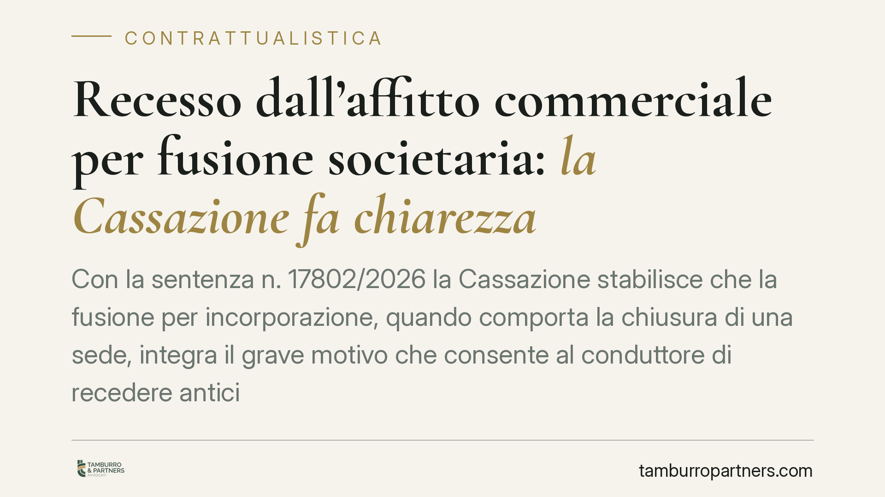

Recesso dall'affitto commerciale per fusione societaria: la Cassazione fa chiarezza
Con la sentenza n. 17802/2026 la Cassazione stabilisce che la fusione per incorporazione, quando comporta la chiusura di una sede, integra il grave motivo che consente al conduttore di recedere anticipatamente dalla locazione commerciale. Rilevano le cause dell'operazione, non i suoi effetti. Un chiarimento importante per aziende e proprietari immobiliari.

Il caso
Una banca, conduttrice di un immobile a uso commerciale, recede dal contratto di locazione prima della scadenza. Il motivo: una ristrutturazione societaria per fusione per incorporazione, con conseguente chiusura della sede ospitata nell'immobile locato. Il locatore contesta la legittimità del recesso e pretende l'indennità di occupazione per il periodo successivo. La controversia arriva in Cassazione (Sez. III, sent. n. 17802/2026), che offre due indicazioni di rilievo pratico.
Inquadramento normativo
L'art. 27, comma 8, della L. 392/1978 (la cosiddetta "legge sull'equo canone") riconosce al conduttore di immobili commerciali la facoltà di recedere in qualsiasi momento dal contratto, purché ricorrano "gravi motivi" e con preavviso di almeno sei mesi. La norma non elenca cosa siano questi gravi motivi: la loro individuazione è affidata alla giurisprudenza.
Secondo un orientamento consolidato, il grave motivo deve essere estraneo alla volontà del conduttore, sopravvenuto rispetto alla stipula e tale da rendere eccessivamente gravosa la prosecuzione del rapporto. La Cassazione, con questa pronuncia, precisa che occorre guardare alla causa dell'evento e non ai suoi effetti economici: se la ristrutturazione societaria risponde a un'esigenza organizzativa oggettiva e non a un mero calcolo di convenienza, il recesso è legittimo.
Rilevano poi l'art. 1220 c.c. (offerta della prestazione da parte del debitore) e l'art. 1591 c.c. (danno da ritardata restituzione dell'immobile locato). La Corte chiarisce che anche un'offerta non formale di riconsegna, se rifiutata in malafede dal locatore, impedisce a quest'ultimo di pretendere l'indennità di occupazione.
Cosa dice la Corte
La fusione per incorporazione è un'operazione straordinaria che, per sua natura, riorganizza strutture, personale e sedi. Quando da essa deriva la chiusura di una filiale o di un ufficio, la prosecuzione della locazione perde giustificazione economica e funzionale. Per la Cassazione questo integra il grave motivo richiesto dalla norma.
Il secondo profilo è altrettanto rilevante. Il conduttore che manifesta la disponibilità a restituire l'immobile — anche senza un atto formale di riconsegna — pone il locatore in condizione di riprenderne il possesso. Se il proprietario rifiuta la riconsegna per calcolo (ad esempio per continuare a incassare l'indennità di occupazione), agisce in malafede: non può quindi pretendere il pagamento previsto dall'art. 1591 c.c.
Implicazioni pratiche
Per le imprese conduttrici la pronuncia amplia il margine di manovra nelle operazioni di riorganizzazione. Una fusione, una scissione o un'incorporazione che comportino la chiusura di una sede possono giustificare il recesso anticipato, riducendo il rischio di dover sostenere canoni per immobili non più utilizzati.
Attenzione, però: la legittimità dipende dalla causa reale dell'operazione. Non basta invocare genericamente una ristrutturazione. Occorre documentare che la riorganizzazione risponde a esigenze oggettive e che la chiusura della sede ne è conseguenza diretta.
Per i locatori, la sentenza è un monito. Rifiutare la riconsegna dell'immobile confidando di incassare l'indennità di occupazione può rivelarsi controproducente: se il rifiuto è in malafede, il diritto all'indennità viene meno.
Cosa fare in concreto
- Documentate la causa dell'operazione societaria: verbali, delibere e piani di riorganizzazione che dimostrino l'esigenza oggettiva alla base della fusione e della chiusura della sede.
- Rispettate il preavviso di sei mesi previsto dall'art. 27, comma 8, comunicando il recesso per iscritto e con modalità che ne provino la ricezione.
- Formalizzate l'offerta di riconsegna dell'immobile, indicando data e modalità: anche un'offerta non rituale può bloccare l'indennità di occupazione, ma la prova scritta rafforza la posizione.
- Locatori: valutate con cautela il rifiuto della riconsegna; un rifiuto ingiustificato può escludere il diritto all'indennità ex art. 1591 c.c.
- Fate verificare il contratto prima di procedere: clausole di durata, penali e patti di stabilità possono incidere sulle conseguenze del recesso.
Disclaimer
Contributo informativo a cura di Tamburro & Partners - Avv. Giuseppe Tamburro. Non costituisce parere legale.
Ogni contratto ha il suo equilibrio.
Se vuoi una revisione delle clausole o una redazione su misura, scrivi allo studio. Ti rispondiamo entro un giorno lavorativo.